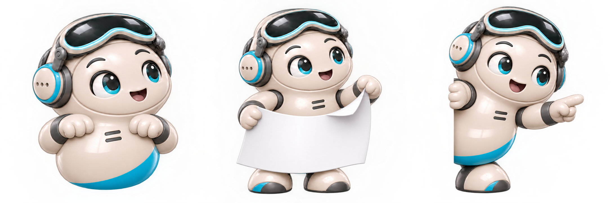
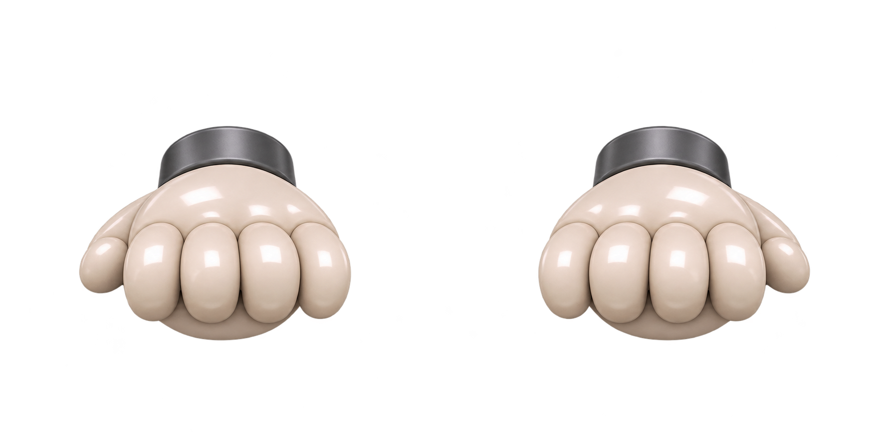

<aside class="tg-motion-tools" aria-label="통이 샘플 동작 확인"><details><summary>통이 동작 미리보기</summary><p>랜딩 샘플 전용 · 철봉과 빼꼼 동작을 확인해요.</p><div><button type="button" data-tg-motion="up">선 잡고 올라오기</button><button type="button" data-tg-motion="peek">옆으로 빼꼼</button></div><button type="button" id="tg-roam-toggle" aria-pressed="false">자동 등장 끄기</button><p id="tg-motion-note" role="status"></p></details></aside>
<div id="tg-wanderer" hidden data-motion="up"><div class="tg-wander-bubble"><button type="button" id="tg-wander-open">뭐 볼지 같이 골라볼까요?</button><button type="button" id="tg-wander-dismiss" aria-label="통이 자동 등장 숨기기">×</button></div><button type="button" class="tg-wander-character" aria-label="통이와 콘텐츠 골라보기"><span class="tg-wander-mask"></span><span class="tg-wander-edge" aria-hidden="true"></span><span class="tg-grip-hand tg-grip-left" aria-hidden="true"></span><span class="tg-grip-hand tg-grip-right" aria-hidden="true"></span></button></div>
